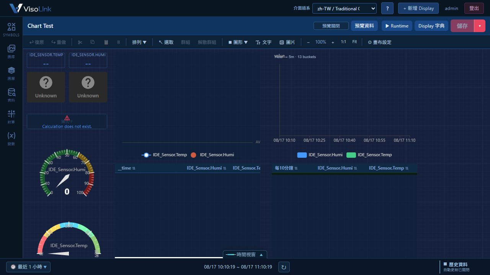
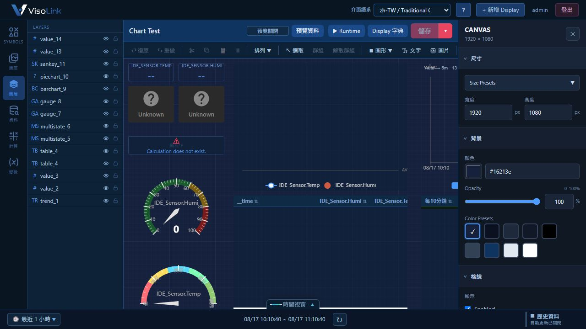
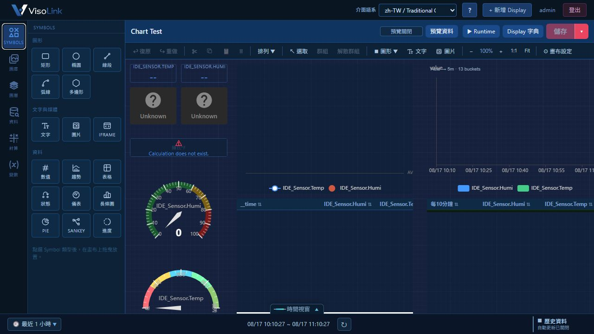
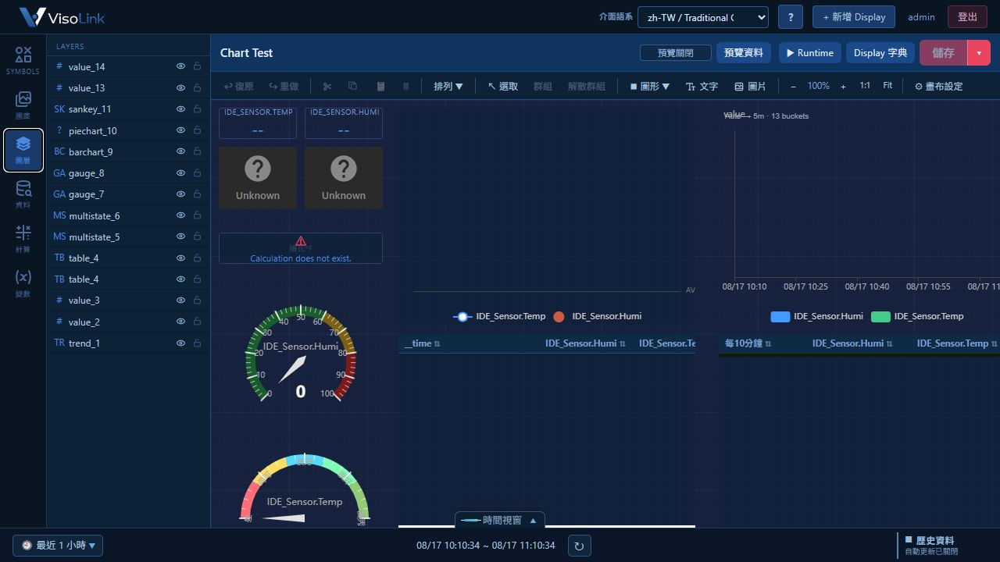
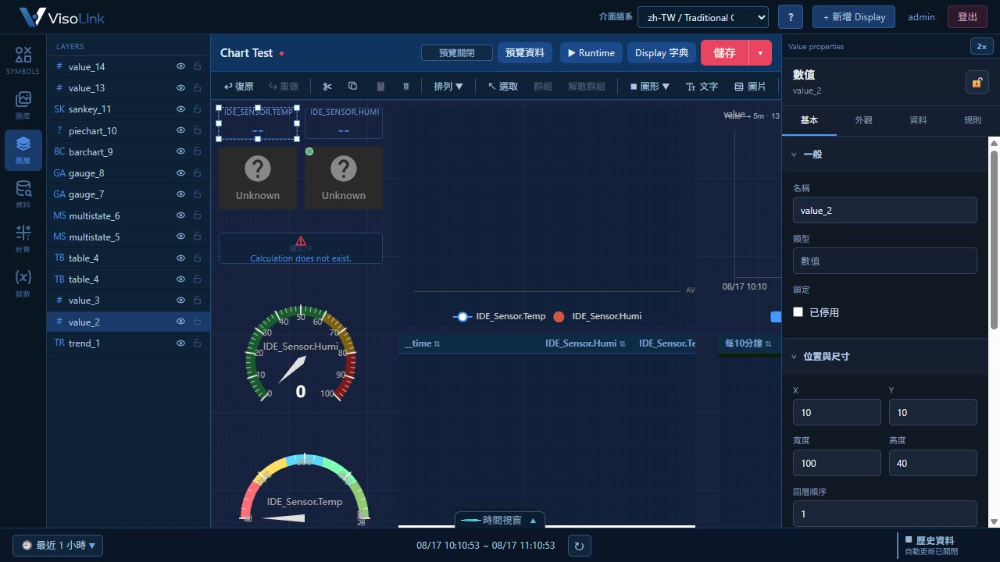

COURSE 02 · DESIGN
Studio Basics
把監看需求轉成清楚、正確且可維護的 Display。
Studio 設計人員建議 90 分鐘先備：Course 00、01
LEARNING OUTCOMES
完成後，能從空白畫布建立可驗證的畫面
01規劃 Display
先確認使用者、裝置、任務與資訊優先順序。
02操作畫布
設定尺寸、背景、格線、縮放與物件位置。
03配置 Symbol
依目的選擇元件，使用圖層與屬性完成編排。
04驗證交付
儲存、預覽並從 Runtime 使用情境完成驗收。
WORKSPACE
Studio 由六個主要操作區組成

編輯器全貌：左側功能區、上方工具列、中央畫布、右側設定與下方時間列。- 功能面板Symbols、圖庫、圖層、資料、計算與變數。
- Display 工具列名稱、預覽、Runtime、字典與儲存。
- 編輯工具列復原、剪貼、排列、群組與快速新增。
- 畫布與屬性配置物件並調整選取 Symbol。
BEFORE YOU DRAW
不要從放元件開始，先回答四個問題
設計原則：先定義使用者要回答的問題，再決定需要哪些 Symbol；不要用元件種類反推畫面內容。
DISPLAY SETUP
建立一張可以被找到、理解與維護的 Display
01選擇工作資料夾
確認 Display 應放在哪個設備、區域或專案分類。
建立 Display
從 Display 清單的「新增 Display」進入新畫布。
使用可辨識名稱
名稱應反映區域、設備與用途，避免 Test1、New Display 等暫時名稱。
確認所有者與使用範圍
建立前先釐清由誰維護、哪些角色需要使用。
建議命名形式：區域－設備／產線－用途，例如「A區－空壓機－運轉總覽」。
CANVAS
畫布尺寸決定設計基準，顯示模式決定觀看方式

畫布設定包含尺寸、背景顏色、不透明度、格線與貼齊。- 依主要顯示設備選擇尺寸或自訂寬高
- 背景需與元件文字、狀態顏色保持足夠對比
- 使用格線建立一致的對齊基準
- 開啟貼齊，降低微小位置偏差
- 調整尺寸後重新檢查所有物件與 Runtime 呈現
EDITING BASICS
先熟練選取與復原，再開始大量編排
選取與多選
點選單一物件；依操作方式選取多個物件進行批次處理。
移動與縮放
拖曳移動；使用控制點調整尺寸，並檢查數值是否精確。
複製與刪除
複製相似設定可維持一致；刪除前確認目前選取範圍。
復原與重做
發現誤操作立即復原；不要以重新載入取代正常編輯流程。
常見錯誤：畫布縮放後誤以為物件尺寸改變。畫布視圖百分比只影響編輯時觀看比例。
LAYOUT TOOLS
用工具建立一致性，不靠目測逐一調整
排列
將多個物件對齊邊緣或中心，並維持一致間距。
群組
把需一起移動或縮放的物件組合；修改內部物件前先確認選取層級。
圖層順序
控制重疊物件的前後關係；背景與裝飾物件應避免遮住操作內容。
同類 KPI 卡片應具有相同尺寸、字級、間距、單位位置與狀態顏色。
SYMBOLS
依資訊問題選擇 Symbol

選擇 Symbol 類型後，在畫布上拖曳放置。圖形
矩形、橢圓、線段、弧線與多邊形。
文字與媒體
文字、圖片與 iFrame。
單點資訊
數值、狀態、儀表與進度。
多筆資料
Trend、表格、長條、Pie 與 Sankey。
CHOOSE WITH PURPOSE
同一份資料，可以有不同的正確呈現方式
目前是多少？
使用數值；必須附上名稱、單位與合理小數位。
是否正常？
使用狀態或 Multi-State；顏色之外也要有文字或圖示。
距離門檻多遠？
使用 Gauge 或進度；刻度與區間必須有業務依據。
隨時間如何變化？
使用 Trend；確認時間範圍、序列、單位與尺度。
避免：為了視覺豐富同時用數值、Gauge、Pie 顯示完全相同的資訊，卻沒有增加判讀價值。
LAYERS
畫面越複雜，越需要透過圖層精確選取

圖層面板顯示物件類型、名稱、顯示與鎖定狀態。- 以圖層清單選取被其他物件遮住的 Symbol
- 隱藏物件以檢查重疊與下層內容
- 鎖定背景、框線及完成配置的物件
- 使用能辨識用途的物件名稱
- 發現同名物件時立即重新命名
PROPERTIES
每個 Symbol 的設定分成清楚的責任區域

範例：數值 Symbol 的基本屬性與位置尺寸。- 基本名稱、位置、尺寸、層級與元件專屬設定。
- 外觀字型、顏色、邊框、背景與視覺樣式。
- 資料DataBinding、聚合、格式與資料設定。
- 規則依資料條件改變狀態或外觀。
Course 02 先學會辨認屬性結構；完整資料綁定於 Course 03 說明。
SAVE & PREVIEW
儲存是保留設計，預覽才是驗證使用結果
1確認未儲存狀態名稱旁提示與儲存按鈕
2儲存 Display等待完成訊息
3預覽資料檢查資料與狀態
4進入 Runtime依真實操作驗證
5返回修正重新儲存與複驗
正常資料
數值、單位、狀態與時間正確。
例外狀態
載入、無資料、無權限與錯誤不造成誤判。
顯示設備
固定畫布、符合螢幕與全畫面都可使用。
HANDS-ON ASSESSMENT
Course 02 實作任務
建立與編排
- 建立指定尺寸與背景的 Display
- 放置標題、狀態、三項 KPI、Gauge 與 Trend 區域
- 使用排列、群組及圖層完成整齊配置
- 以可辨識名稱重新命名主要 Symbol
驗證與說明
- 說明每種 Symbol 為何適合該資訊
- 展示背景鎖定與圖層選取
- 完成儲存及 Runtime 預覽
- 指出正常、無資料與無權限的預期呈現
通過標準畫面資訊層次清楚、同類元件一致、物件可維護，且能從 Runtime 使用者角度完成驗證。
下一門：DataBinding & DataBrowser →